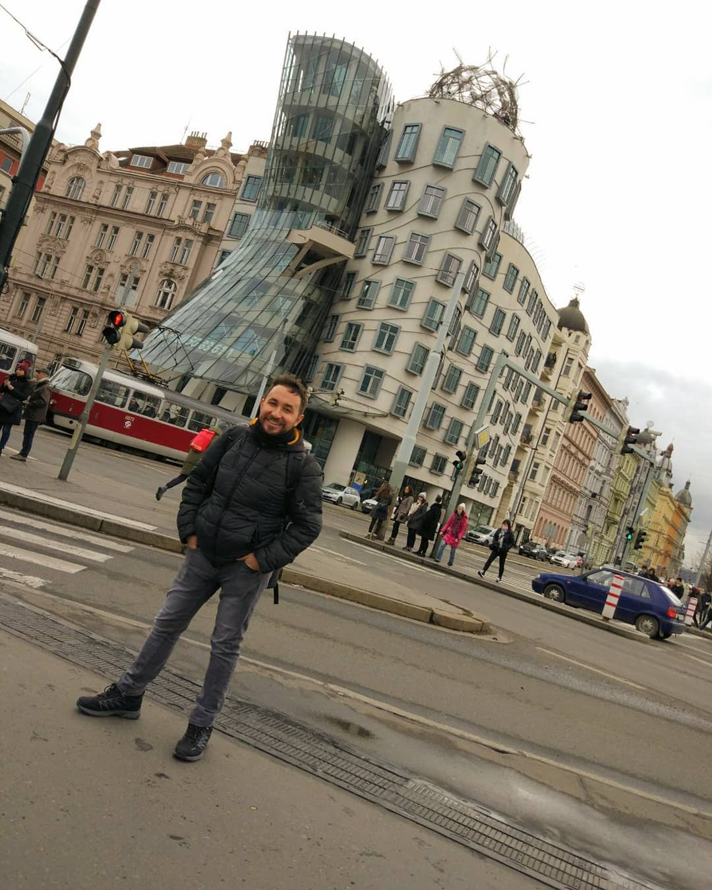

Let's talk about me!
Hi,I am Dogancan Aksak.I'am 22 years old and living in Eskisehir.I'am student at Anadolu Unversity.
I was born in Zonguldak and grew up there until 3.
Then me and my family moved to Nazilli
Nazilli is a town of Aydin.After all that i got into Anadolu University and moved to Eskisehir on my own
This is my fourth year in this city, my departman is computer engineering.